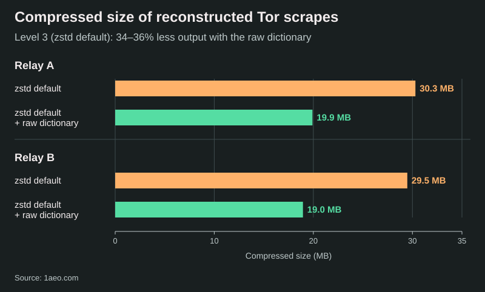

34–36% Smaller Tor MetricsPort Archives with a zstd Dictionary
Version scope: Tor 0.4.9.15. Verification used a build reporting 0.5.0.0-alpha-dev; the relay definitions, onion-service definition files, logging metric and connection-type names were checked against 0.4.9.15 and matched.
Compression scope: Reconstructed text from real Prometheus samples for two relays on one host, over about one week spanning an upgrade to 0.4.9.15. Relay A recorded at least 1,000 BEGIN_DIR streams/s for 17% of measured time and fewer for 83%. Relay B recorded zero BEGIN_DIR streams for 100% of measured time.
The raw dictionary cut level-3 (zstd default) output by 34–36% for two relay datasets compressed one scrape at a time.
329 lines with no onion service and OfflineMasterKey 0. This Tor 0.4.9.15 total includes HELP and TYPE metadata.
391 lines with onion-service and signing-certificate metrics. One onion service with two virtual ports, OfflineMasterKey 1 and a loaded signing certificate covers all 37 families.
The Question from forest #
In a September 12 tor-relays message, forest wrote: I'm looking for a sample containing all possible metrics strings
. They were compressing scrapes with zstd to study an ongoing distributed denial-of-service (DDoS) attack, using:
curl -s 127.0.0.1:9035/metrics | sed 's/ [0-9]*$//' > dictThe Raw Dictionary Cut Level-3 (zstd Default) Output by 34–36% #
Across about 10,000 reconstructed scrapes per relay, the raw dictionary reduced level-3 (zstd default) compressed totals from 30.3 to 19.9 MB for Relay A and 29.5 to 19.0 MB for Relay B.

| Configuration | Relay A (MB) | Relay B (MB) |
|---|---|---|
| Reconstructed text, before compression | 263.7 | 263.3 |
| Level 3 (zstd default); one scrape per frame | 30.3 | 29.5 |
| Level 3 (zstd default) + raw dictionary; one scrape per frame | 19.9 | 19.0 |
329 Lines with No Onion Service and OfflineMasterKey 0 #
The curl and sed command in forest’s question captures those 329 lines. Tor prints a counter with value 0 when it has no recorded events, rather than omitting that line. This includes denial-of-service (DoS) counters and exit Domain Name System (DNS) counters on a non-exit relay. No traffic needs to be generated to make those counter lines appear. The only conditional relay family is the signing-certificate expiry gauge, tor_relay_signing_cert_expiry_timestamp.
391 Lines with Onion-Service and Signing-Certificate Metrics #
tor_hs_* appears only when an onion service is configured. Each application byte counter, tor_hs_app_read_bytes_total and tor_hs_app_write_bytes_total, emits one sample per HiddenServicePort, labeled with its virtual port. The signing-certificate expiry gauge needs both OfflineMasterKey 1 and a loaded certificate. Enabling both conditions in a local test produced the predicted 391 lines.
| Configuration | Families | Total lines |
|---|---|---|
Relay; no onion service, OfflineMasterKey 0 | 24 | 329 |
Same relay with OfflineMasterKey 1 and a loaded signing certificate | 25 | 332 |
| Same + one onion service, one virtual port | 37 | 389 |
| Same + one onion service, two virtual ports | 37 | 391 |
“Complete” means coverage of this version’s metric families and label forms. Onion addresses and port values vary by configuration; the download uses a 56-character x placeholder and ports 80 and 443.
0.4.9.15 Adds Three Directory DoS Counter Series #
Released October 28, 2026, 0.4.9.15 adds begindir_rejected, begindir_rate_rejected and begindir_hsdir_rejected under tor_relay_dos_total. These three type-label series accompany the new denial-of-service (DoS) defenses for BEGIN_DIR and hidden-service directory (HSDir) requests. Versions 0.4.9.1-alpha through 0.4.9.14 lack them.
For background on the traffic paths, see Tor Under Attack: Mapping the Pressure Points.
Download and Use the Dictionary #
Download tor-metrics-dict-0.4.9.15.txt: 391 scrape lines with sample values removed. Use it as a raw zstd dictionary:
zstd -D tor-metrics-dict-0.4.9.15.txt scrape.prom -o scrape.prom.zst
zstd -d -D tor-metrics-dict-0.4.9.15.txt scrape.prom.zst -o restored.promKeep the exact dictionary used for compression so it is available for decompression.
Where to Check in the Source #
There is no single metrics definition file. Start with these three, then follow the label builders:
| Source file | What it defines |
|---|---|
src/feature/relay/relay_metrics.c | 24 relay families in base_metrics[]; the fill_*() functions add their labels. fill_store() calls every family’s builder. |
src/feature/hs/hs_metrics_entry.c | 12 onion-service families, histogram buckets and reason tables. Reason strings also live in hs_metrics_entry.h; hs_metrics.c attaches onion and port labels. |
src/lib/log/log_sys.c | The remaining family: tor_bug_reached_count. |
conn_type_to_string() in src/core/mainloop/connection.c supplies the connection type labels: types 3 through 20, skipping 10, give 17 names. Label combinations produce 102 samples for tor_relay_connections_total and 68 for tor_relay_connections.
src/lib/metrics/prometheus.c formats the output; src/lib/metrics/metrics_store.c determines iteration order. src/feature/metrics/metrics.c gathers the subsystem stores.
Methods: Reproduce the Complete Scrape #
The source was read and the expected lines counted before building Tor and running a disposable local instance. The following is the sanitized test configuration. Paths, nickname and authority identities are examples; all addresses are loopback. Use fresh, separate test directories, never an existing relay’s keys or configuration. Save this as /path/to/test-torrc, replacing the example paths with your test locations.
DataDirectory /path/to/test-data
SocksPort 0
ORPort 127.0.0.1:19001
AssumeReachable 1
PublishServerDescriptor 0
OfflineMasterKey 1
Nickname metricsdump
ContactInfo none
ExitRelay 0
MetricsPort 127.0.0.1:19035
MetricsPortPolicy accept 127.0.0.1
HiddenServiceDir /path/to/test-hs
HiddenServicePort 80 127.0.0.1:8080
HiddenServicePort 443 127.0.0.1:8443
DirAuthority fakeauth orport=19002 v3ident=0000000000000000000000000000000000000001 127.0.0.1:19003 0000 0000 0000 0000 0000 0000 0000 0000 0000 0002Generate keys for this test configuration, remove only its disposable master identity secret key, then start Tor with the same configuration. The signing key and certificate remain in the test data directory. The explicit configuration arguments avoid loading your normal relay’s configuration or defaults:
tor --defaults-torrc /dev/null -f /path/to/test-torrc --keygen --no-passphrase
rm /path/to/test-data/keys/ed25519_master_id_secret_key
tor --defaults-torrc /dev/null -f /path/to/test-torrcThe gotcha: DisableNetwork 1 also closes MetricsPort, because it disables non-control network connections. This test used the fake loopback DirAuthority above instead; the observed traffic stayed on localhost. That configuration is a test setup, not a general network sandbox.
With the test instance running, capture its MetricsPort output from another terminal. The extraction command below also handles signed integer sample values and preserves metadata:
curl -fsS 127.0.0.1:19035/metrics > scrape.prom
wc -l < scrape.prom
# 391
sed -E '/^[^#]/s/ -?[0-9]+$//' scrape.prom > dictThe result was 37 families and 391 lines: 317 samples plus 74 metadata lines.
Practical Checks #
- Count lines, including metadata. For a Tor 0.4.9.15 relay with no onion service and
OfflineMasterKey 0,curl -fsS 127.0.0.1:9035/metrics | wc -lshould return 329. Use your configured MetricsPort. - Do not compare by line position. Families within each metrics store follow a SipHash-backed hash-table order that may change after a restart. Samples within a family retain insertion order. A raw zstd dictionary can match content anywhere in the dictionary, so that reordering does not invalidate it.
- DNS record-type labels remain disabled in Tor 0.4.9.15. The
recordlabel, with valuesA,PTRandAAAA, is behind#if 0. Tor fixed the reporting bug in the closed tor#40490 by counting DNS errors without a record-type breakdown. The upstream libevent fix has since been merged, but these Tor labels remain disabled. Leave them out of this dictionary. - Keep versions separate. Compared with 0.4.8.25, 0.4.9.x adds
tor_relay_dos_total{type="stream_rejected"},tor_relay_destroy_cell_total,tor_relay_drop_cell_total,tor_relay_circ_proto_violation_totalandtor_bug_reached_count. The 0.4.9.15 ChangeLog also says 0.4.8 and earlier will no longer work on the network.
Compression Methods and Complete Results #
Samples collected at a nominal one-minute cadence were exported from Prometheus, with a few missing scrapes. Reconstruction used a Tor output template for names, labels, HELP and TYPE text, removed collector-added target labels, and preserved the recorded integer values. It included only series present at each timestamp: both datasets changed from 278 to 281 samples per scrape across the upgrade to 0.4.9.15. Original response bodies and historical family order were not captured. Live Tor’s order may change on restart; this reconstruction used one fixed order.
The activity percentages use interval-average rates from tor_relay_streams_total{type="BEGIN_DIR"}, weighted by elapsed time between scrapes. The comparison cutoff is 1,000 streams/s. Intervals crossing a counter reset, the version transition or a gap longer than 90 seconds are excluded; gaps are not counted as zero activity.
The experiment used zstd 1.5.7 through python-zstandard. Individual-scrape and five-scrape frames included checksums and were all round-trip checked. A final batch could contain fewer than five scrapes. The trained-dictionary test used the other relay’s reconstructed samples from the same period, with a 32 KiB training target; it was not a test on a later, held-out period. The trained dictionaries and relay samples remain private.
At level 19, the raw dictionary reduced compressed bytes by 52.3% for Relay A and 52.6% for Relay B. At level 3 (zstd default), training on the other relay improved the input/output ratios to 18.6× and 19.6×. Five-scrape frames without a dictionary averaged 747 and 683 bytes per input scrape, compared with 1,976 and 1,880 bytes for separate frames with the raw dictionary; adding the dictionary to those batches reduced size further. These are comparisons among the tested configurations, not universal bounds.
Table units: MB means 1,000,000 bytes; KiB means 1,024 bytes. Input/output ratio is reconstructed input bytes divided by output bytes. Mean bytes per scrape divides the total output by the number of reconstructed input scrapes, including for batched frames. Dictionary savings is the reduction in compressed bytes compared with no dictionary at the same compression level and frame grouping; a dash marks rows without a dictionary. Dictionary storage and collector/archive overhead are excluded. Rows use the same configuration order for both relays.
Relay A
| Configuration | Total (MB) | Input/output ratio | Mean bytes per scrape | Dictionary savings |
|---|---|---|---|---|
| Reconstructed text, before compression | 263.7 | 1.0× | 26,168 | — |
| Level 3 (zstd default); one scrape per frame | 30.3 | 8.7× | 3,007 | — |
| Level 3 (zstd default) + raw dictionary; one scrape per frame | 19.9 | 13.2× | 1,976 | 34.3% |
| Level 19; one scrape per frame | 24.6 | 10.7× | 2,446 | — |
| Level 19 + raw dictionary; one scrape per frame | 11.8 | 22.4× | 1,166 | 52.3% |
| Level 3 (zstd default) + dictionary trained on the other relay; one scrape per frame | 14.2 | 18.6× | 1,406 | 53.2% |
| Level 3 (zstd default); up to five scrapes per frame | 7.5 | 35.0× | 747 | — |
| Level 3 (zstd default) + raw dictionary; up to five scrapes per frame | 5.3 | 50.0× | 524 | 29.9% |
| Level 19 + long-distance matching; all collected scrapes in one frame* | 1.4 | 194.3× | 135 | — |
Relay B
| Configuration | Total (MB) | Input/output ratio | Mean bytes per scrape | Dictionary savings |
|---|---|---|---|---|
| Reconstructed text, before compression | 263.3 | 1.0× | 26,125 | — |
| Level 3 (zstd default); one scrape per frame | 29.5 | 8.9× | 2,925 | — |
| Level 3 (zstd default) + raw dictionary; one scrape per frame | 19.0 | 13.9× | 1,880 | 35.7% |
| Level 19; one scrape per frame | 23.9 | 11.0× | 2,371 | — |
| Level 19 + raw dictionary; one scrape per frame | 11.3 | 23.3× | 1,123 | 52.6% |
| Level 3 (zstd default) + dictionary trained on the other relay; one scrape per frame | 13.4 | 19.6× | 1,330 | 54.5% |
| Level 3 (zstd default); up to five scrapes per frame | 6.9 | 38.2× | 683 | — |
| Level 3 (zstd default) + raw dictionary; up to five scrapes per frame | 4.7 | 56.6× | 461 | 32.5% |
| Level 19 + long-distance matching; all collected scrapes in one frame* | 1.1 | 242.9× | 108 | — |
* Separate whole-period experiment: All collected scrapes were concatenated and compressed in one call, at level 19 with long-distance matching and a 128 MiB window. This path did not enable frame checksums and did not perform a round-trip check, so it is not equivalent to the independently verified per-scrape cases. Its input/output ratios were 194.3× for Relay A and 242.9× for Relay B. MiB means 1,048,576 bytes. It does not test a live streaming collector or short data-retention policy.
Scope: Two relays, one shared host, and about one week of reconstructed text. The comparisons measure compressed size.
Complete Family Counts #
Counts below use the two-port test configuration, including the signing certificate. In this one-service configuration, each family contributes two metadata lines in addition to its samples. The 329-line baseline contains 23 relay families and the logging family; the conditional signing family brings the relay definition total to 24. Rows are ranked by sample count within each group.
Relay
| Family | Samples | All lines |
|---|---|---|
tor_relay_connections_total | 102 | 104 |
tor_relay_connections | 68 | 70 |
tor_relay_congestion_control | 17 | 19 |
tor_relay_dos_total | 13 | 15 |
tor_relay_exit_dns_error_total | 12 | 14 |
tor_relay_congestion_control_total | 10 | 12 |
tor_relay_flag | 9 | 11 |
tor_relay_load_onionskins_total | 8 | 10 |
tor_relay_intro1_total | 7 | 9 |
tor_relay_est_rend_total | 6 | 8 |
tor_relay_rend1_total | 5 | 7 |
tor_relay_est_intro_total | 4 | 6 |
tor_relay_load_oom_bytes_total | 4 | 6 |
tor_relay_streams_total | 3 | 5 |
tor_relay_load_global_rate_limit_reached_total | 2 | 4 |
tor_relay_load_socket_total | 2 | 4 |
tor_relay_traffic_bytes | 2 | 4 |
tor_relay_circ_proto_violation_total | 1 | 3 |
tor_relay_circuits_total | 1 | 3 |
tor_relay_destroy_cell_total | 1 | 3 |
tor_relay_drop_cell_total | 1 | 3 |
tor_relay_exit_dns_query_total | 1 | 3 |
tor_relay_load_tcp_exhaustion_total | 1 | 3 |
tor_relay_signing_cert_expiry_timestamp | 1 | 3 |
| Relay total (24 families) | 281 | 329 |
Onion service
| Family | Samples | All lines |
|---|---|---|
tor_hs_intro_circ_build_time | 8 | 10 |
tor_hs_rend_circ_build_time | 8 | 10 |
tor_hs_rdv_error_count | 5 | 7 |
tor_hs_intro_rejected_intro_req_count | 4 | 6 |
tor_hs_app_read_bytes_total | 2 | 4 |
tor_hs_app_write_bytes_total | 2 | 4 |
tor_hs_intro_established_count | 1 | 3 |
tor_hs_intro_num_total | 1 | 3 |
tor_hs_pow_suggested_effort | 1 | 3 |
tor_hs_rdv_established_count | 1 | 3 |
tor_hs_rdv_num_total | 1 | 3 |
tor_hs_rdv_pow_pqueue_count | 1 | 3 |
| Onion service total (12 families) | 35 | 59 |
Logging
| Family | Samples | All lines |
|---|---|---|
tor_bug_reached_count | 1 | 3 |
| Logging total (1 family) | 1 | 3 |
Grand total: 37 families, 317 samples and 391 lines.
Every onion-service sample carries an onion label. Application byte counters also carry a port; tor_hs_rdv_error_count and tor_hs_intro_rejected_intro_req_count expand by reason. Each circuit-build histogram emits five finite buckets at 1,000, 5,000, 10,000, 30,000 and 60,000 milliseconds, plus +Inf, _sum and _count. Bucket labels are printed with two decimal places, such as le="1000.00".